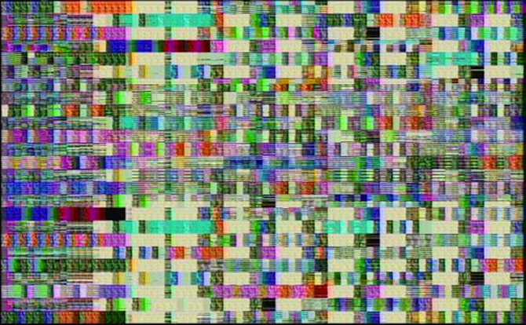

|
| |
Pace Digital Gallery is pleased to present Lovid and Jill Magid
October 4 - 28th
opening reception Oct 4th, 5 - 7pm
 photo credit: 486 Shorts at DeFunct/ReFunct, Rua Red, Ireland
Photo by Rosa Menkman
photo credit: 486 Shorts at DeFunct/ReFunct, Rua Red, Ireland
Photo by Rosa MenkmanLoVid, the artist duo Tali Hinkis and Kyle Lapidus, has performed at Lampo at Graham Foundation, International Film Festival Rotterdam, MoMA, PS1, The Kitchen, Roulette, Aurora Picture Show , and FACT. LoVid installations and objects have been exhibited at Netherland Media Art Institute, The Science Gallery (Ireland), Real Art Ways, Urbis, (UK), The Jewish Museum, The Neuberger Museum, and The New Museum. LoVid has been artist in residence at STEIM, Smack Mellon, Cue Art Foundation, Eyebeam, Harvestworks, free103point9, and Alfred University, and has received fellowships and grants from The Netherland America Foundation, NYFA, LMCC, Experimental TV Center, NYSCA, turbulence.org, and Greenwall Foundation.
486 Shorts (2006) stems from a personal interaction with an ordinarily closed off part
of a common machine. By getting inside the black box (the casing of an archaic 486 computer),
LoVid reached the physical location where signals are passed. Wire was used to make connections
on the circuit board of the video card, to produce short videos. Recordings made from these
shorts were then edited into 486 short clips, each corresponding to one of the physical shorts.
486 Shorts was recorded during a residency at iEAR in 2006 and released on Analogous in 2009.
More of the Same (2007) loads copies of one sound sample, causing each computer/browser/network
system to produce different sounds.
Many copies challenge the setup and may not “work” properly,
or may cause the browser to crash.
One image is also repeated horizontally and vertically in each window,
the same number of times as the sound is loaded.
Commissioned by New Radio and Performing Arts, Inc., for Networked_Music_Review. It was made possible
with funding from the New York State Music Fund, established by the New York State Attorney general
at Rockefeller Philanthropy Advisors.

photo credit: 486 Shorts, screen shot
photo credit: Trust
Jill Magid seeks intimate relations with impersonal structures. She is intrigued by hidden information, being public as a condition for existence, and intimacy in relation to power and observation. Magid has had solo exhibitions at the Whitney Museum of American Art; Tate Modern, London; Berkeley Art Museum, Matrix program; Yvon Lambert in New York and Paris; Stedelijk Museum Bureau Amsterdam; and Gagosian Gallery, New York. She has written three books: One Cycle of Memory in the City of L; Lincoln Ocean Victor Eddy, Becoming Tarden, and is currently working on her fourth, Failed States. Magid lives and works in Brooklyn, NY.
In 2004, Magid spent 31 days in Liverpool, during which time she developed a close relationship with Citywatch (Merseyside Police and Liverpool City Council), whose function is citywide video surveillance – the largest system of its kind in England. The videos of Evidence Locker were staged and edited by the artist and filmed by the police using the public surveillance cameras in the city centre. Wearing a bright red trench coat she would call the police on duty with details of where she was and ask them to film her in particular poses, places or even guide her through the city with her eyes closed, as seen in the video Trust. Unless requested as evidence, CCTV footage obtained from the system is stored for 31 days before being erased. For access to this footage, Magid had to submit 31 Subject Access Request Forms – the legal document necessary to outline to the police details of how and when an ‘incident’ occurred. Magid chose to complete these forms as though they were letters to a lover, expressing how she was feeling and what she was thinking. These ‘letters’ form the diary One Cycle of Memory in the City of L – an intimate portrait of the relationship between herself, the police and the city.